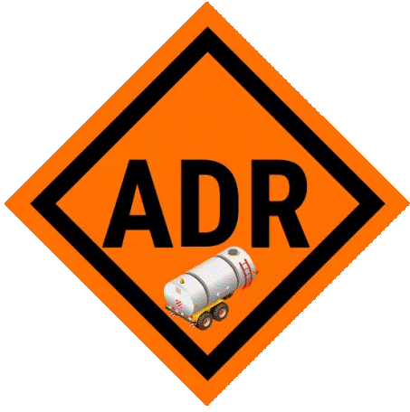
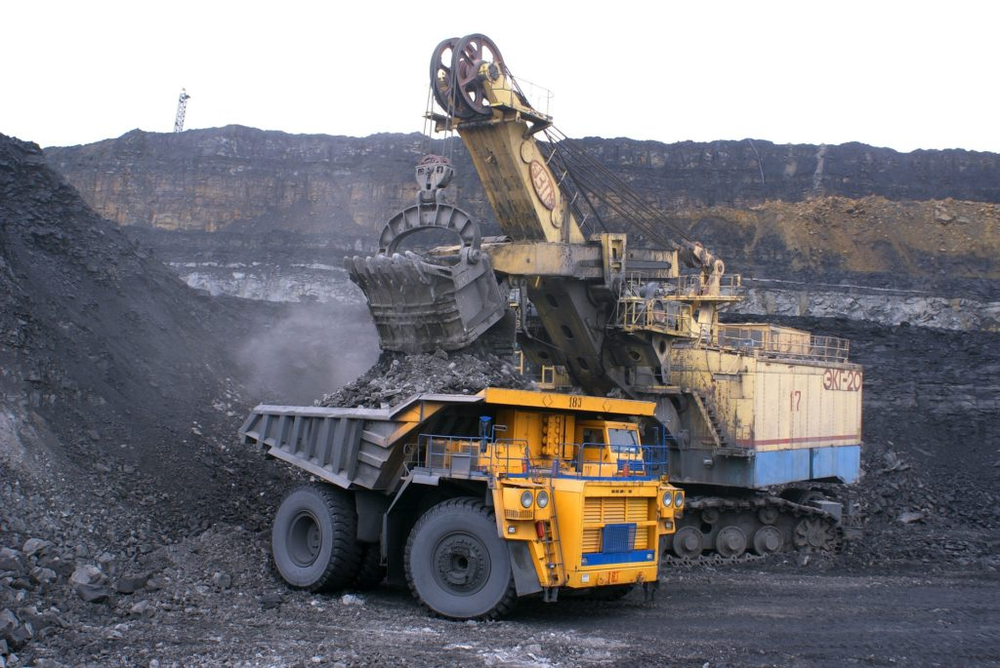
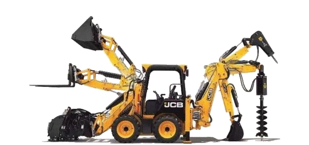
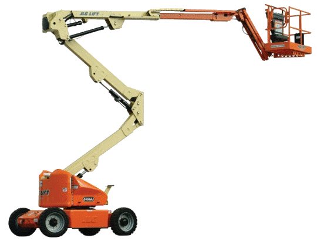
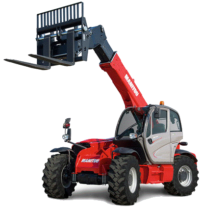
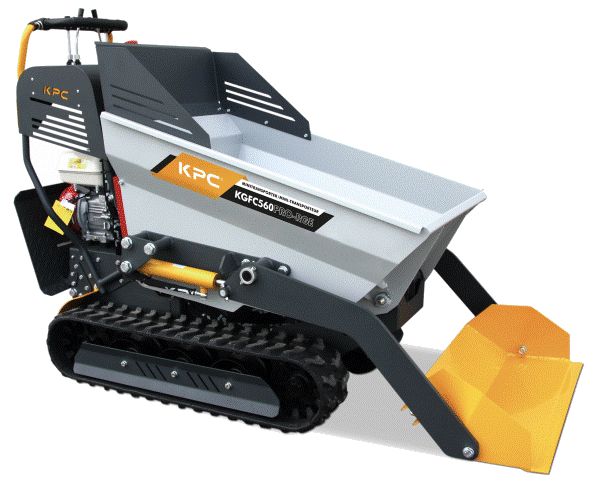
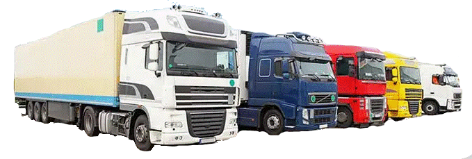
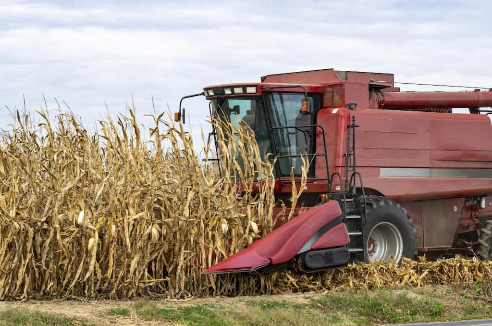

AM¡CAR
O BARCO
Av. Conde de Fenosa, 18, 32300 O Barco, Ourense
📞 698 17 66 95
HORARIO: De lunes a jueves de 10:00-13:30 y de 16:00 a 20:00 horas
viernes de 10:00 a 13:30 y de 16:00 a 19:00 horas
AM¡CAR
A RUA
Rúa Felgar, 13, 32350 A Rúa, Ourense
📞 988 50 82 95
HORARIO: De lunes a jueves de 10:00-13:30 y de 16:00 a 20:00 horas
viernes de 10:00 a 13:30 y de 16:00 a 19:00 horas
AM¡CAR
VIANA DO BOLO
Rúa Nicolás Tenorio, 1, 32550 Viana do Bolo, Ourense
📞 665 84 77 34
HORARIO: De lunes a viernes de 9:30 a 13:30 horas
AM¡CAR
VERÍN
Av. Luis Espada, 70, 32600 Verín, Ourense
📞 604 02 31 46
HORARIO: De lunes a jueves de 10:00-13:30 y de 16:00 a 20:00 horas
viernes de 10:00 a 13:30 y de 16:00 a 19:00 horas
AM¡CAR
XINZO DE LIMIA
Av. de Ourense, 12, 32630 Xinzo de Limia, Ourense
📞 -
HORARIO: -- horas
AM¡CAR
PONFERRADA
Calle Obispo Osmundo, 12, 24401 Ponferrada (León)
📞 600 83 63 06
HORARIO: De lunes a viernes 9:30-14:00 / 16:30-20:00
NUESTROS CURSOS

CAP
CAP INICIAL
CAP INICIAL MERCANCIAS/VIAJEROS
formación Am¡car
CONTENIDO:
Bloque I: Aplicación de la reglamentación y normativa de transportes.
Bloque II: Mecánica y mantenimiento de vehículos.
Bloque III: Salud, seguridad vial y medioambiental, servicio, logística.
OBJETIVO
Obtención de una acreditación profesional europea que avala que has superado los exámenes para ser un conductor profesional capaz de ejercer la profesión en todos los países de la Unión Europea.
MODALIDAD
PRESENCIAL 130H TEÓRIA + 10H PRÁCTICAS. Se puede realizar pack con permiso C / C+E / D.
CAP INICIAL MERCANCIAS/VIAJEROS
formación Am¡car
CONTENIDO:
Bloque I: Aplicación de la reglamentación y normativa de transportes.
Bloque II: Mecánica y mantenimiento de vehículos.
Bloque III: Salud, seguridad vial y medioambiental, servicio, logística.
OBJETIVO
Obtención de una acreditación profesional europea que avala que has superado los exámenes para ser un conductor profesional capaz de ejercer la profesión en todos los países de la Unión Europea.
MODALIDAD
PRESENCIAL 130H TEÓRIA + 10H PRÁCTICAS. Se puede realizar pack con permiso C / C+E / D.
CAP AMPLIACIÓN
CAP AMPLIACIÓN MERCANCIAS/VIAJEROS
formación Am¡car
CONTENIDO:
Bloque I: Aplicación de la reglamentación y normativa de transportes.
Bloque II: Mecánica y mantenimiento de vehículos.
Bloque III: Salud, seguridad vial y medioambiental, servicio, logística.
OBJETIVO
Ampliar el perfil profesional como transportista. El curso CAP Ampliación tiene una duración más corta que el inicial porque concentra únicamente el contenido específico que se desea acreditar.
MODALIDAD
PRESENCIAL 32,5H TEÓRIA + 2,5H PRÁCTICAS. Se puede realizar pack con permiso C / C+E / D.
CAP AMPLIACIÓN MERCANCIAS/VIAJEROS
formación Am¡car
CONTENIDO:
Bloque I: Aplicación de la reglamentación y normativa de transportes.
Bloque II: Mecánica y mantenimiento de vehículos.
Bloque III: Salud, seguridad vial y medioambiental, servicio, logística.
OBJETIVO
Ampliar el perfil profesional como transportista. El curso CAP Ampliación tiene una duración más corta que el inicial porque concentra únicamente el contenido específico que se desea acreditar.
MODALIDAD
PRESENCIAL 32,5H TEÓRIA + 2,5H PRÁCTICAS. Se puede realizar pack con permiso C / C+E / D.
CAP RENOVACIÓN
CAP RENOVACIÓN MERCANCIAS/VIAJEROS
formación Am¡car
CONTENIDO:
Bloque I: formación avanzada sobre conducción racional basada en normas de seguridad.
Bloque II: aplicación de la reglamentación.
Bloque III: salud, seguridad vial y medioambiental, servicio, logística.
OBJETIVO
Deben hacerlo todos los conductores profesionales cada cinco años. Estos cursos para renovar el CAP deben realizarse durante toda su vida profesional.
MODALIDAD
PRESENCIAL 35H.
CAP RENOVACIÓN MERCANCIAS/VIAJEROS
formación Am¡car
CONTENIDO:
Bloque I: formación avanzada sobre conducción racional basada en normas de seguridad.
Bloque II: aplicación de la reglamentación.
Bloque III: salud, seguridad vial y medioambiental, servicio, logística.
OBJETIVO
Deben hacerlo todos los conductores profesionales cada cinco años. Estos cursos para renovar el CAP deben realizarse durante toda su vida profesional.
MODALIDAD
PRESENCIAL 35H.

ADR
ADR EXPLOSIVOS O RADIOACTIVOS
formación Am¡car
CONTENIDO:
1. Disposiciones particulares aplicables al transporte de materias y objetos explosivos.
2. Riesgos específicos que presentan las materias y objetos explosivos y pirotécnicos.
3. Disposiciones específicas sobre la carga en común de materias y objetos de la clase 1.
4. El Reglamento de explosivos y sus disposiciones complementarias.
5. Formación práctica básica común aplicada exclusivamente a las materias de la clase 1.
OBJETIVO
Preparar al alumnado para la adquisición de los conocimientos teóricos adecuados y los hábitos prácticos necesarios para superar las pruebas.
SE DEBE HACER RENOVACIÓN A LOS 5 AÑOS
formación Am¡car
CONTENIDO:
1. Disposiciones particulares aplicables al transporte de materias y objetos explosivos.
2. Riesgos específicos que presentan las materias y objetos explosivos y pirotécnicos.
3. Disposiciones específicas sobre la carga en común de materias y objetos de la clase 1.
4. El Reglamento de explosivos y sus disposiciones complementarias.
5. Formación práctica básica común aplicada exclusivamente a las materias de la clase 1.
OBJETIVO
Preparar al alumnado para la adquisición de los conocimientos teóricos adecuados y los hábitos prácticos necesarios para superar las pruebas.
SE DEBE HACER RENOVACIÓN A LOS 5 AÑOS
ADR BÁSICO + CISTERNAS
formación Am¡car
CONTENIDO:
1. Normativa ADR.
2. Nociones básicas de química.
3. Clasificación de mercancías peligrosas.
4. Control y vigilancia sobre el lugar de trabajo y su entorno.
5. Envases y embalajes.
6. Documentación.
7. Tipos de vehículos y equipamiento especial.
8. Conducción de vehículos.
9. Operación de carga y descarga.
10. Actuación en caso de emergencia.
OBJETIVO
Preparar al alumnado para la adquisición de los conocimientos teóricos adecuados y los hábitos prácticos necesarios para superar las pruebas.
SE DEBE HACER RENOVACIÓN A LOS 5 AÑOS
formación Am¡car
CONTENIDO:
1. Normativa ADR.
2. Nociones básicas de química.
3. Clasificación de mercancías peligrosas.
4. Control y vigilancia sobre el lugar de trabajo y su entorno.
5. Envases y embalajes.
6. Documentación.
7. Tipos de vehículos y equipamiento especial.
8. Conducción de vehículos.
9. Operación de carga y descarga.
10. Actuación en caso de emergencia.
OBJETIVO
Preparar al alumnado para la adquisición de los conocimientos teóricos adecuados y los hábitos prácticos necesarios para superar las pruebas.
SE DEBE HACER RENOVACIÓN A LOS 5 AÑOS
CARRETILLA ELEVADORA
Formación Am¡car
UD1. El oficio del operador de carretillas
UD2. La carretilla elevadora
UD3. Mecánica y mantenimiento de la carretilla
UD4. Manejo de carretillas elevadoras
UD5. Simbología
UD6. Seguridad en la conducción de carretillas
UD7. Ergonomía en la conducción de carretillas
UD8. Normativa aplicable
OBJETIVO:
Adquirir las competencias y habilidades necesarias para la correcta conducción y manejo de carretillas elevadoras con control de las cargas total y seguridad del area
MODALIDAD:
ONLINE/PRESENCIAL 10H + PRÁCTICAS
ITC MINERA
formación Am¡car
1. Definición de los trabajos.
2. Técnicas preventivas y de protección específicas.
3. Equipos, herramientas o medios auxiliares.
4. Control y vigilancia sobre el lugar de trabajo y su entorno.
5. Interferencias con otras actividades.
6. Normativa y legislación.
OBJETIVO:
Formar y capacitar a los trabajadores del sector minero en base a la regulación de la formación profesional mínima en materia de seguridad y salud laboral que deben poseer los que desempeñan su trabajo habitual en centros de trabajo adscritos a actividades mineras. MODALIDAD:
Presencial 20H
ITC SILICE Y POLVO
Formación Am¡car
Tema 1. Riesgos para la salud por exposición a polvo y SCR.
Tema 2. Materias manipuladas y riesgo de puesta en suspensión.
Tema 4. Control del riesgo: Las mediciones.
Tema 5. Medidas de protección contra el polvo y la SCR.
Tema 6. Equipos de protección respiratoria: uso, ajuste y mantenimiento.
Tema 7. Buenas y malas prácticas preventivas
Tema 8. Derecho a la información y participación de los trabajadores.
OBJETIVO:
Prevenir las enfermedades profesionales causadas por polvo y SCR de los trabajadores expuestos en la industria de rocas y minerales industriales en procesos de extracción, elaboración y manipulado, haciendo el uso adecuado de las medidas de protección colectivas e individuales.
MODALIDAD:
10 HORAS
OPERADOR DE RETROEXCAVADORA Y PALA CARGADORA
Formación Am¡car
MODULO I: Retroexcavadora.
MODULO II: Pala cargadora.
MODULO III: Ergonomía y construcción: trabajo en zanjas.
MODULO IV: Técnicas de prevención
OBJETIVO:
Adquirir las competencias y habilidades necesarias para la correcta conducción y manejo de pala cargadora y retroexcavadora, potenciar la seguridad en el uso de maquinaria y cargas según las normas de prevención de riesgos.
MODALIDAD:
ONLINE/PRESENCIAL 10H + PRÁCTICAS
GRÚA PLUMA
Formación Am¡car
UD1. Prevención de riesgos en la grúa.
UD2. Sistemas de seguridad del equipo para la limitación de cargas.
UD3. El cabrestante y sus accesorios.
UD4. Útiles de enganche.
UD5. Riesgo eléctrico.
UD6. Recomendaciones de seguridad frente a otros trabajos y riesgos.
UD7. Señales para trabajar con la grúa.
UD8. Equipos de protección individual
OBJETIVO:
Adquirir las competencias y habilidades necesarias para el manejo de la grúa pluma respetando la normativa y utilizando los EPIIS necesarios para evitar riesgos.
MODALIDAD:
ONLINE/E-LEARNING 12H + PRÁCTICAS
OPERADOR PLATAFORMAS MÓVILES
Formación Am¡car
UD1. Las plataformas móviles de personal.
UD2. Seguridad en el manejo de los PEMP.
UD3. Riesgos y medidas de prevención durante el manejo de los PEMP.
UD4. Mantenimiento de las PEMP.
OBJETIVO:
Adquirir las competencias y habilidades necesarias para manejar plataformas elevadoras móviles de personal (PEMP) en condiciones de seguridad.
MODALIDAD:
ONLINE/E-LEARNING 12H + PRÁCTICAS
OPERADOR DE CARRETILLA TELESCÓPICA (MANITOU)
Formación Am¡car
Tema 1. Introducción
Tema 2. Definición
Tema 3. Partes manipuladora telescópica
Tema 4. Tipos y clasificación
Tema 5. Usos
Tema 6. Normativa de aplicación
Tema 7. Accidentes más frecuentes
Tema 8. Prevención de accidentes y riesgo
Tema 9. Manuales
Tema 10. Placas
Tema 11. Mantenimiento e inspección
OBJETIVO:
Adquirir las competencias y habilidades necesarias para realizar gestiones de operador y manipulador telescópica y su correcto funcionamiento con el fin de evitar situaciones de riesgo.
MODALIDAD:
ONLINE/E-LEARNING 10H + PRÁCTICAS
PRL MOVIMIENTOS DE TIERRA (MINI PALA Y ORUGA)
Formación Am¡car
Tema 1. Técnicas preventivas
Tema 2. Medios auxiliares, equipos y herramientas
Tema 3. Verificación, identificación y vigilancia de la zona de trabajo
Tema 4. Interferencias entre actividades
Tema 5. Derechos y obligaciones
Tema 6. Primeros auxilios y medidas de emergencia.
OBJETIVO:
Adquirir conocimientos preventivos básicos sobre los riesgos inherentes a los vehículos y maquinaria para el movimiento de tierras más utilizados en la construcción, su utilización y las técnicas preventivas específicas de aplicación..
MODALIDAD:
ONLINE/E-LEARNING 20H + PRÁCTICAS
CONDUCCIÓN EFICIENTE EN VEHÍCULOS INDUSTRIALES
Formación Am¡car
UD1. Consumo de energía y emisiones al medio ambiente de los vehículos industriales.
UD2. Nociones sobre motores y vehículos.
UD3. La actitud del conductor.
UD4. Control de los elementos del vehículo y conducción.
UD5. Conducción eficiente.
OBJETIVO:
Conocer y aplicar las diferentes técnicas de conducción eficiente al manejar cualquier vehículo industrial.
MODALIDAD:
ONLINE/E-LEARNING 30H + PRÁCTICAS
CONDUCCIÓN EFICIENTE
Formación Am¡car
UD1. Consumo de energía y emisiones al medio ambiente.
UD2. La actitud del conductor.
UD3. Conducción eficiente desde el punto de vista del vehículo.
OBJETIVO:
Conocer las diferentes técnicas de conducción Y mejorar aspectos relacionados con el consumo de carburante para reducir al máximo el consumo de combustible con diferentes habilidades.
MODALIDAD:
ONLINE/E-LEARNING 12H + PRÁCTICAS
CAPACITACIÓN TRANSPORTISTA
Formación Am¡car
UD1. Elementos del derecho privado
UD2. El empresario mercantil
UD3. Derecho social
UD4. Derecho fiscal
UD5. Gestión comercial y financiera
UD6. Normas de explotación y técnicas
UD7. Seguridad en carretera
OBJETIVO:
Obtención del título acreditativo que reconoce a sus titulares la capacidad para poder ejercer tanto la profesión de transportista de mercancías de servicio público (o por cuenta ajena), como la de Operador de Transporte.
MODALIDAD:
ONLINE/MIXTO 100H
PRL MAQUINARIA AGRÍCOLA
Formación Am¡car
1. CONCEPTOS BÁSICOS SOBRE SEGURIDAD Y SALUD EN EL TRABAJO. MARCO NORMATIVO.
2. RIESGOS GENERALES Y SU PREVENCIÓN.
3. RIESGOS ESPECÍFICOS EN MAQUINARIA.
4. MEDIDAS PREVENTIVAS APLICADAS A MAQUINARIA AGRÍCOLA.
5. PREVENCIÓN DE RIESGOS CON MAQUINARIA AGRÍCOLA.
6. LA SEGURIDAD EN LA MAQUINARIA AGRÍCOLA
OBJETIVO:
Identificar cuáles son los riesgos que conlleva una mala actuación en la utilización de maquinaria agrícola, aplicando los procedimientos adecuados para un uso seguro de la maquinaria.
MODALIDAD:
ONLINE 20H
PRL GENÉRICO
Formación Am¡car
Bloque I: Conceptos básicos sobre seguridad y salud en el trabajo.
Bloque II: Riesgos generales y específicos. Prevención y protección.
Bloque III: Riesgos específicos y su prevención. Genéricos.
Bloque IV: Elementos básicos de gestión de prevención de riesgos.
Bloque V: Primeros auxilios.
OBJETIVO: Identificar conceptos básicos sobre seguridad y salud y puedan conocer el marco normativo general que rige la actividad en este aspecto.
MODALIDAD:
PRESENCIAL/ONLINE 60H
EQUIPOS PROTECCIÓN INDIVIDUAL
Formación Am¡car
Tema I: Introducción
Tema II: Aspectos generales sobre EPI’S
Tema III: Clasificación de EPI’S
Tema IV: Selección de EPI’s
Tema V: Elementos auxiliares.
OBJETIVO: Identificar los diferentes equipos de protección individual a utilizar en cada tipo de trabajo y aplicar conocimientos adquiridos en este curso para promover el uso adecuado de los equipos de protección individual.
MODALIDAD:
ONLINE 10H
MANIPULADOR DE ALIMENTOS
Formación Am¡car
Tema I: Introducción
Tema II: Higiene alimentaria
Tema III: Contaminación de los alimentos.
Tema IV: Enfermedades transmisión alimentaria.
Tema V: Conservación y almacenamiento.
Tema VI: Limpieza e higiene de manipuladores.
Tema VII: Sistema de control APPCC
Tema VIII: Ley de información (alérgenos)
OBJETIVO: Proporcionar los conocimientos básicos en cuanto a la manipulación de alimentos (fabricación, procesado, envasado, almacenamiento, transporte, distribución y comercialización de los alimentos)
MODALIDAD: ONLINE 10H